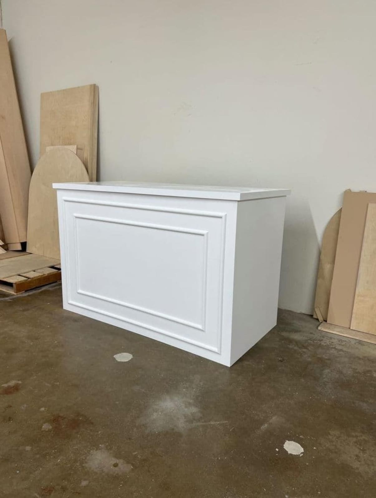
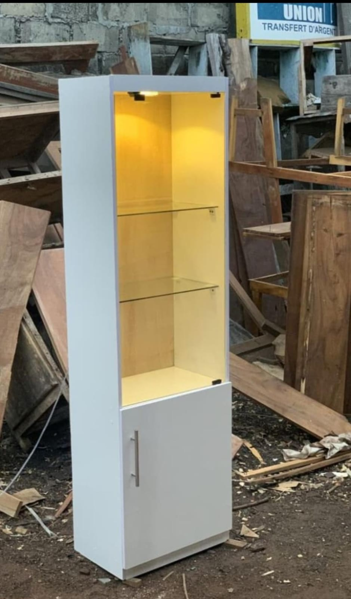
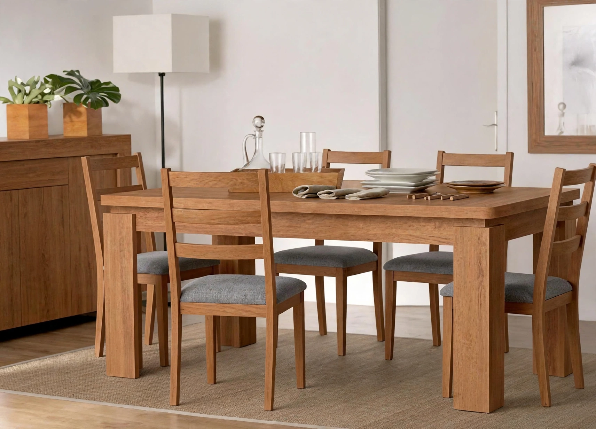
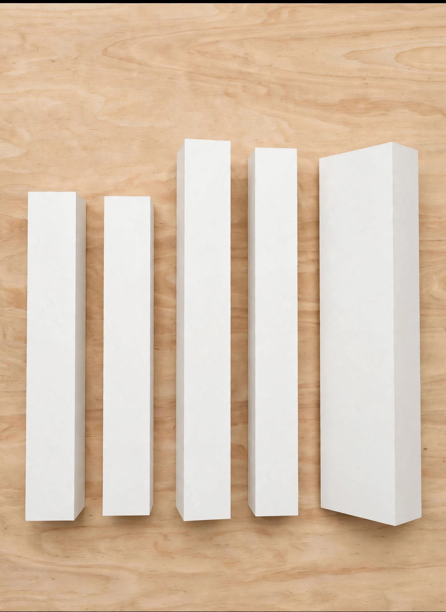
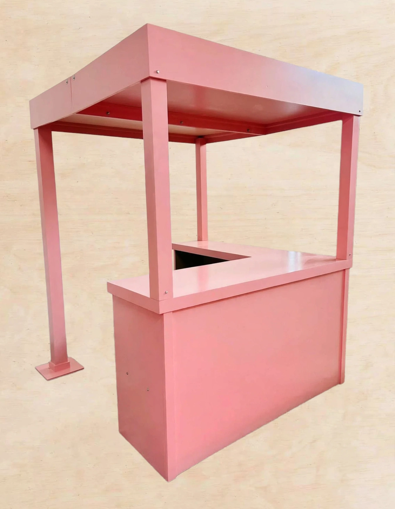
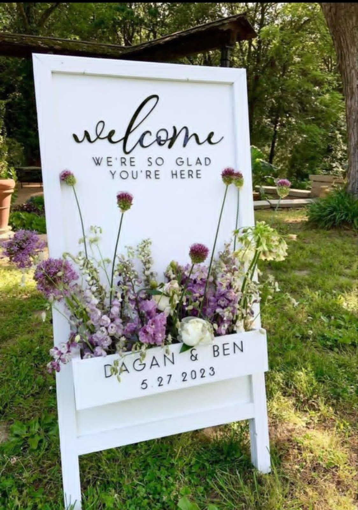
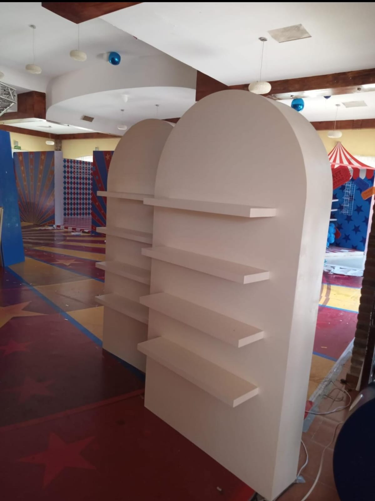

Escritorios
Base de escritorio
Base de escritorio en acabado liso color blanco roto.
Cada pieza es el resultado de horas de trabajo artesanal con la mejor madera. Explora nuestros trabajos y encuentra inspiración para tu próximo proyecto.

Base de escritorio en acabado liso color blanco roto.

Anaquel complementario de escritorio en color mate blanco con un iluminacion integrada y paneles de cristal.

Comedor de 6 plazas en madera maciza con acabado natural, con sillas tapizadas en tela gris.

Pilares|Podiums para tarimas, fabricada con tableros de triplay, MDF o madera sólida y pintada en color blanco roto.

Estructura en madera con recubrimiento satinado de alto brillo, ideal para eventos, stands y puntos de venta..

Elegante cartel de bienvenida vertical tipo caballete, fabricado en madera con un acabado lacado en blanco mate uniforme

Proxima descripcion